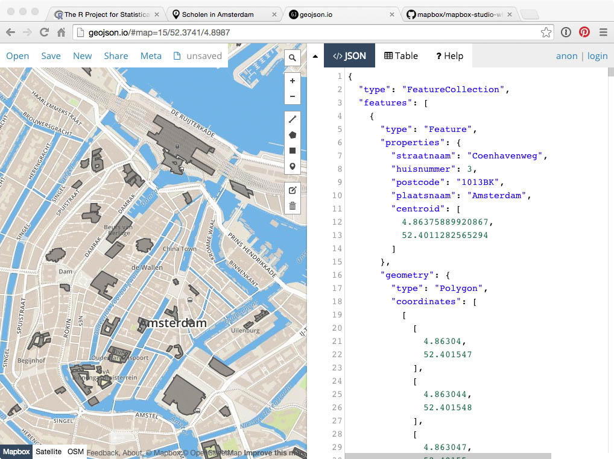
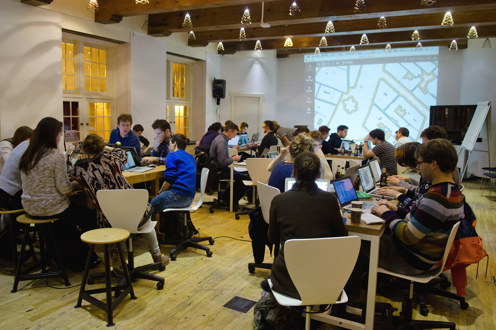
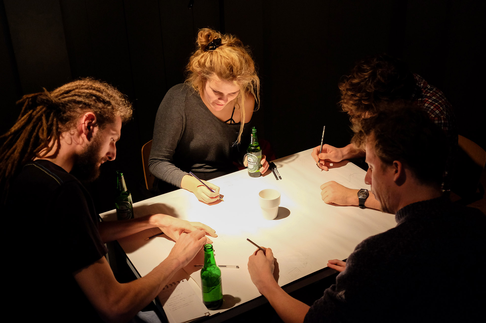
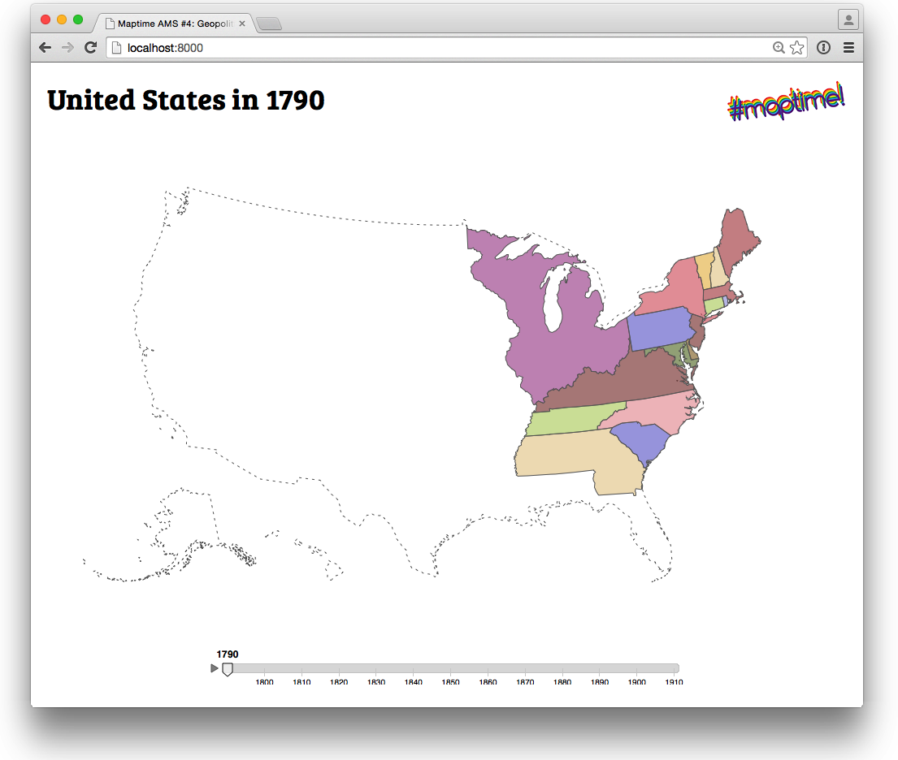
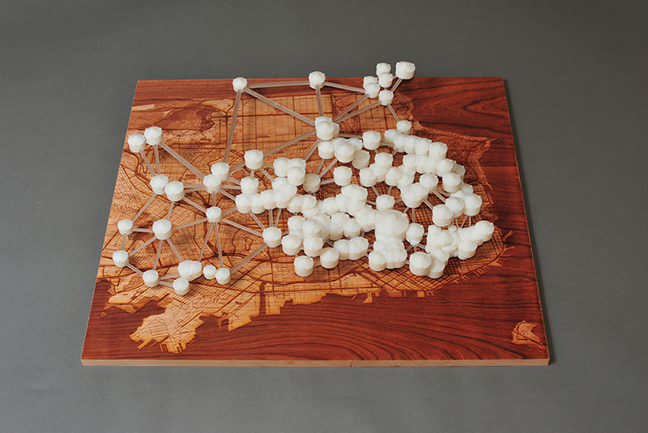

Maptime!
Maptime: Maps for all forever!
- A time for learning about maps
- Hands-on
- Beginner-focused
- Emphasis on open source, programming, and web-mapping
Please bring a laptop! Beginners very welcome.

Hoe 't ooit begon...
Maptimes!
Voorheen: GIS, dure software, niet open source, ingewikkels

ArcGIS
Maptime: open source, tutorials, kennis delen

GitHub Diff

D3.js

Leaflet

Mapbox Studio
OpenStreetMap
geojson.io

Illustrator
maptime.io - resources

Maptime - GitHub
Maptime Amsterdam
Maptime Amsterdam
Maptime Amsterdam

Maptime Amsterdam
Ontwerpers, ontwikkelaars, studenten,
geografen, geschiedkundigen, architecten
Beginners en gevorderden!
Maptime Amsterdam #4: Geopolitiek & Grenzen
Hans van der Meer
Animated Borders
Maptime Amsterdam #5: 1000 Jaar Amsterdam & OpenStreetMap
Fred Feddes
OpenStreetMap
Fablab

Talking Data
Bezoek een Maptime in de buurt:
Amsterdam, Berlin, Milan, Rome, Southampton, Oslo. Binnenkort: nog veel meer!
Ok! Workshop! 
Mapbox Studio

Gemeentegrenzen